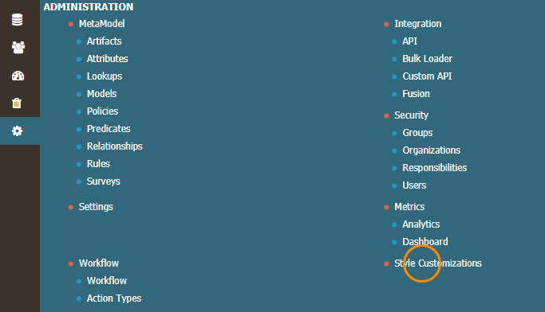
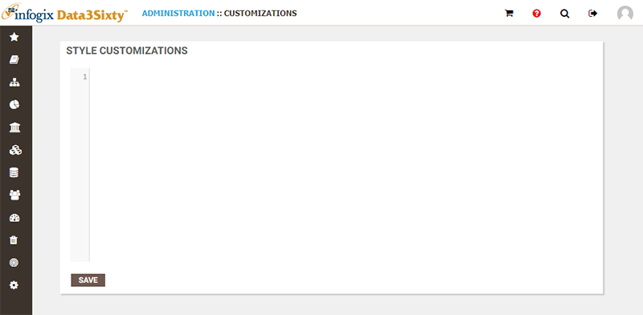
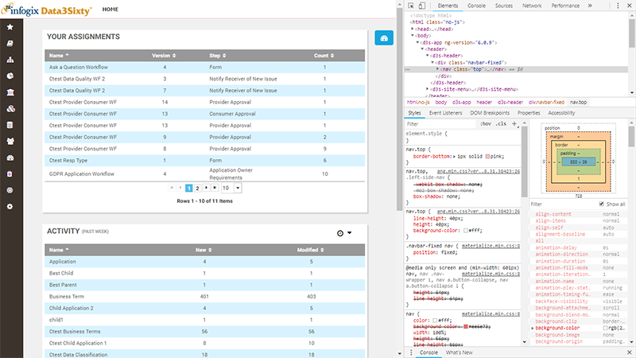

|
|
Style customization
If you have administrator permissions, you can customize the styling of the user interface to echo the branding of your organization.
Note: A solid understanding of CSS (Cascading Style Sheets) coding is required to use this feature. You will be overriding the style sheets used by the application to present the user interface and the data of your company. It is notoriously easy to introduce unintended side effects in CSS (for example, accidentally displaying white text over white backgrounds), so you should be able to confidently make changes in CSS and troubleshoot issues to use this feature.
To customize the styling of the application, click the Administration icon on the left side of the main screen, then select Style Customizations:

The Style Customizations page opens:

This page is very straightforward, with a single code field for you to enter or edit your own CSS code, and a Save button to save and commit your changes.
This CSS code is then applied over the top of the styling code of the application.
Using the Web Inspector to identify selectors
The web inspector is very useful for identifying the CSS selector for any elements you wish to restyle in the application.
In Chrome, the web inspector can be invoked by choosing More Tools > Developer Tools from the menu, right-clicking an element and choosing Inspect, or via the keyboard shortcut Ctrl+Shift+I.
In Microsoft Edge or Internet Explorer, the web inspector can be invoked by choosing Developer Tools from the menu or via the keyboard shortcut F12.

The Elements view can be used to locate the element you will need to restyle, and the Styles view below will list all of the CSS rules which have been applied to the element. You can use this list to identify the selector you need to use to override a given styling property.
Changing the application font
To change the font across the application you should use the body selector, rather than the html or universal (*) selector. If you use the web inspector, you will see that the body selector is used to set the default font. The following sample CSS shows how to set the application font to a custom webfont from Google Fonts:
@import url('https://fonts.googleapis.com/css?family=Source+Sans+Pro');
body {
font-family: 'Source Sans Pro', sans-serif;
font-size: 14px;
}There are a couple of other locations where the default font is overridden in the application. Your own font must be specified again for these selectors:
.tile .header, .tile header {
font-family: 'Source Sans Pro', sans-serif !important;
font-weight: 600 !important;
font-size: 18px !important;
}
.ui-widget, .ql-container {
font-family: 'Source Sans Pro', sans-serif;
font-size: 14px;
}
Notice the use of the !important declaration in places. This is either because the original rule to override uses it, or because an inline style has been defined, which we want to override.
Styling the header
If you restyle the header, give consideration to the text and icons which are in the header, making sure to recolor them, if necessary, to ensure a decent contrast between content and background. For example:
nav.top {
background: #252c41;
color: #fff;
border-bottom: 1px solid rgba(0, 0, 0, 0.15);
}div.breadcrumbs .active, div.breadcrumbs .sep {
color: #fff;
}
nav.top ul a, nav.top ul a.help {
color: #fff;
}
nav.top ul a i.fa-question-circle, nav.top .breadcrumbs i.fa-ellipsis-h {
color: #fff !important;
}.favorite, .follow {
color: #fff;
}
nav.top .header-profile-panel a, nav.top .header-search-panel a {
color: #000;
}
Notice that the last rule sets some elements back to black, which we set to white in a previous rule. This is because the targeted elements are displayed on a white pop-up panel, rather than in the header itself. When making changes with broad selectors, be sure to thoroughly check through the UI for cases such as this. Wherever possible, it is better to use more specific selectors, to minimize the chances of any unwanted side effects.
Styling the background
If you wish to recolor the background, use a rule which ensures that the entire background will be painted:
body {
background: linear-gradient(#e0e0e0, #f0f0f0);
min-height: 100vh;
}
Styling buttons
The example below shows how to change the color of the buttons in the application, including the hover and active states:
.ui-button, button.ui-button.ui-state-default, .ui-button.ui-state-default {
background: #30a9e5;
}
.ui-button:hover, button.ui-button.ui-state-default:hover, .ui-button.ui-state-default:hover {
background: #40b9f5;
}
.ui-button:active, button.ui-button.ui-state-default:active, .ui-button.ui-state-default:active {
background: #50c9ff;
}
Styling tables
The example below shows how to change the color of the header row, alternate rows and the selected row in tables:
/* table header row*/
th.ui-state-default, .ui-treetable th.ui-state-default {
background: #252c41;
}
/* table even rows */
.ui-datatable-even {
background: #f7f7f7;
}
/* table selected row */
.ui-multiselect-item .ui-state-highlight, .ui-widget-content .ui-state-highlight, .ui-widget-header .ui-state-highlight {
background: #30a9e5;
}
/* set the info icon color to white for selected row */
tr.ui-state-highlight .RowTools {
color: #fff;
}
Notice that you can use comments to explain what your code is doing. This is highly recommended, especially if several users will be editing the code. It may also be a good idea to make a copy of the CSS code into a file occasionally, possibly even using a source control management system to track the changes to your CSS code.